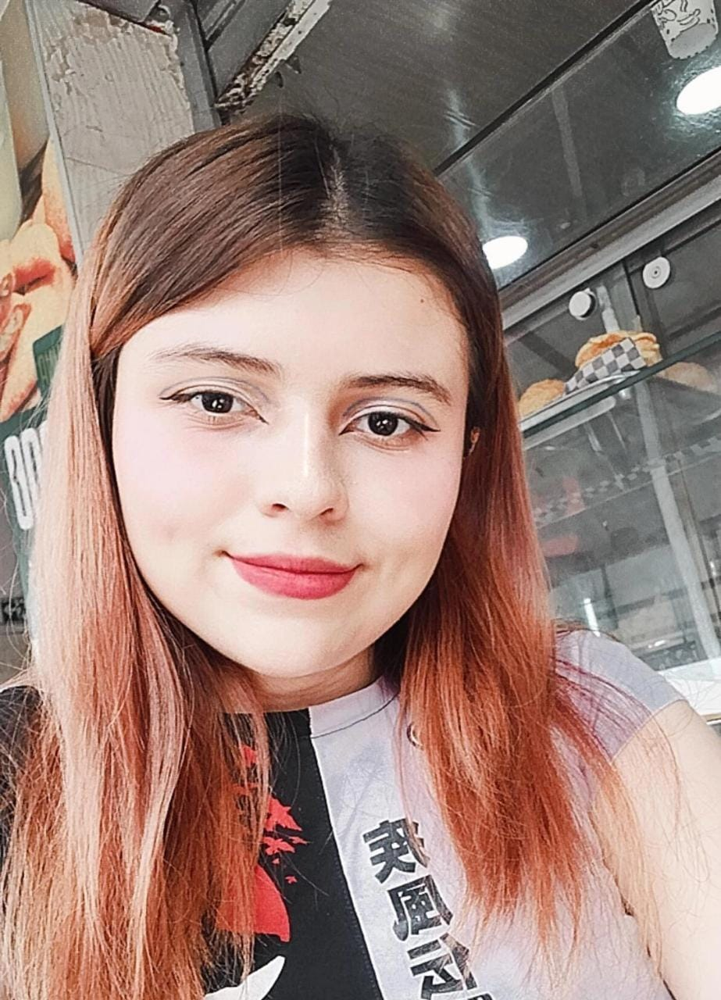

Diana Alejandra Diaz Niño
Junior Full Stack Developer
About me:
Creative and innovative fullstack professional with experience in functional and practical web design for the industry, design management, creation and maintenance of databases together with the logic and solutions requested in a website or web application are executed correctly. Good teamwork and implementation and large or small projects
|
dianaalejandradiaznino313@gmail.com |
 |
github.com/Dianaalejandra1446 |
|
Bucaramanga,Colombia |
|
+57 3217251948 |
Goals:
Coordinate the software development and production processes according to the company's requirements.
Carry out the development of the website structure according to the given requirements.
Design your own proper user interface.
Design front-end elements in a creative and innovative way for the industry.
Develop back-end applications.
Optimize websites with good maintenance and ensuring the speed at which they are accessed.
Create well-functioning databases.
Skills:
- HTML
- CSS
- JavaScript
- Python
- JAVA
Education:
FullStack Developer
Campuslands-Bucaramanga
2023-2024
Experience:
As a fullstack developer, I have had the opportunity to participate in the development of various software projects. I have worked with different technologies and frameworks both in the backend and in the frontend.
On the frontend, I've worked with HTML, CSS, and JavaScript. I've built interactive and optimized user interfaces, implementing features like user authentication, dynamic forms, and real-time updating.
As a junior Java backend developer, I have had the opportunity to work on various projects where I have had to apply my knowledge of Java and other related technologies.
During my experience, I have been responsible for developing and maintaining the business logic of different applications using the Java programming language and the Spring framework.
In addition, I have had the opportunity to work in a team, collaborating with other developers and following good software development practices such as version control and unit testing.
I have also participated in the design of software architectures, making sure to create scalable, efficient and easy-to-maintain solutions.
During my experience as a junior Java backend developer, I have learned to solve problems efficiently, to work in multidisciplinary teams and to adapt quickly to new technologies and projects.
Companies:
-Developer Junior
TIRESIA SAS,Bucaramanga
15/12/2023
Key skills:
- Strong knowledge of HTML, CSS and JavaScript
- JavaScript framework experience
- Knowledge of Java and backend frameworks
- Management of relational databases
- Knowledge of version control
- Capacity to solve problems
- Communication skills
- Continuous learning